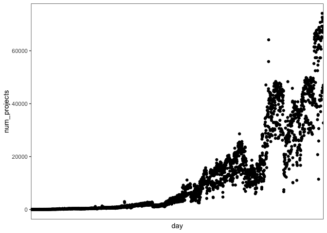
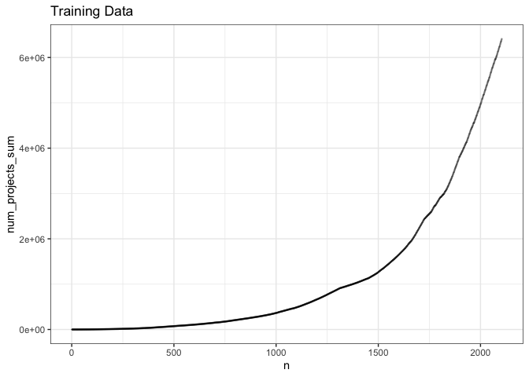
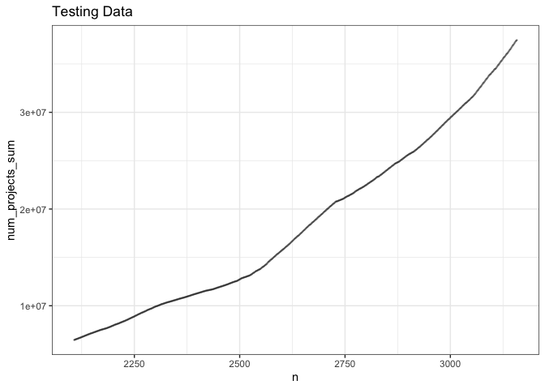
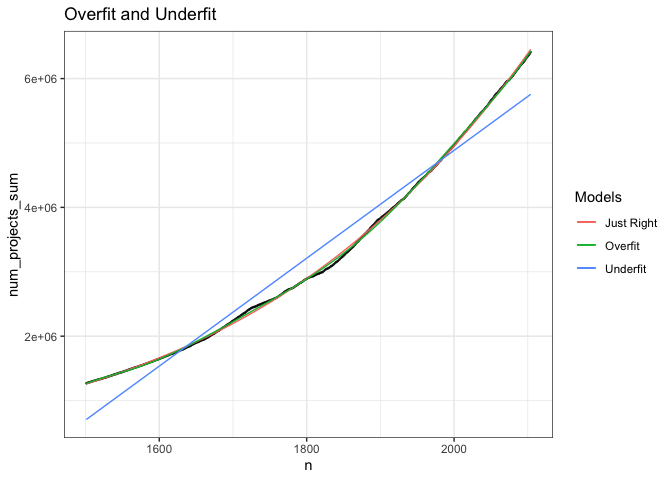
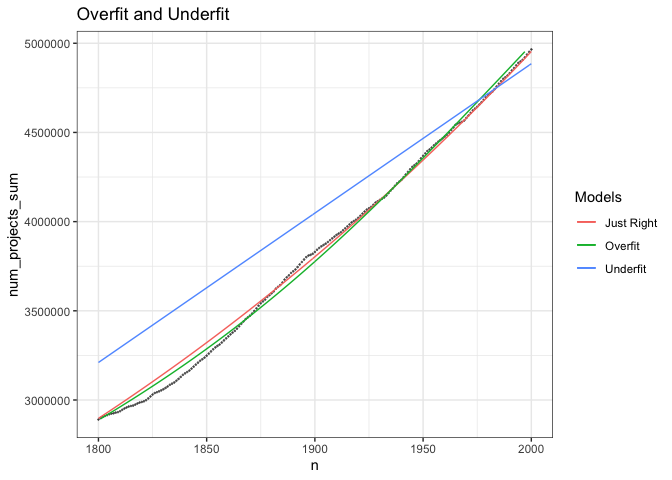
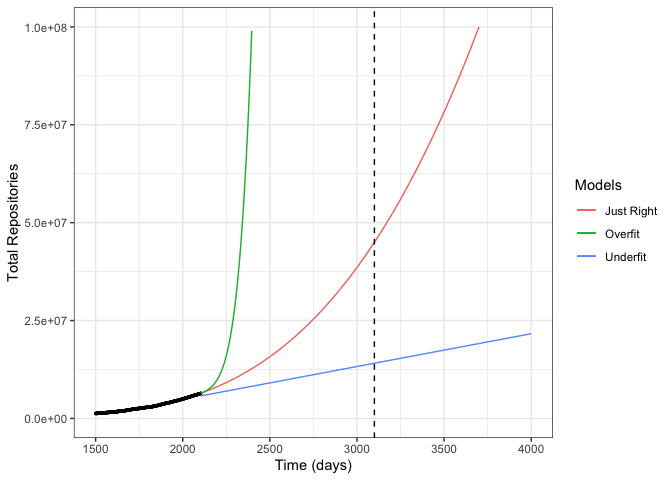
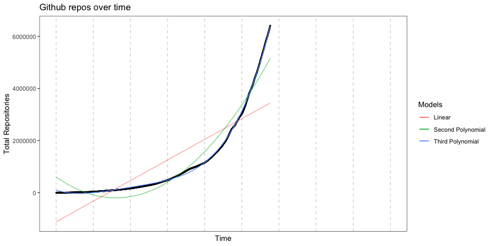
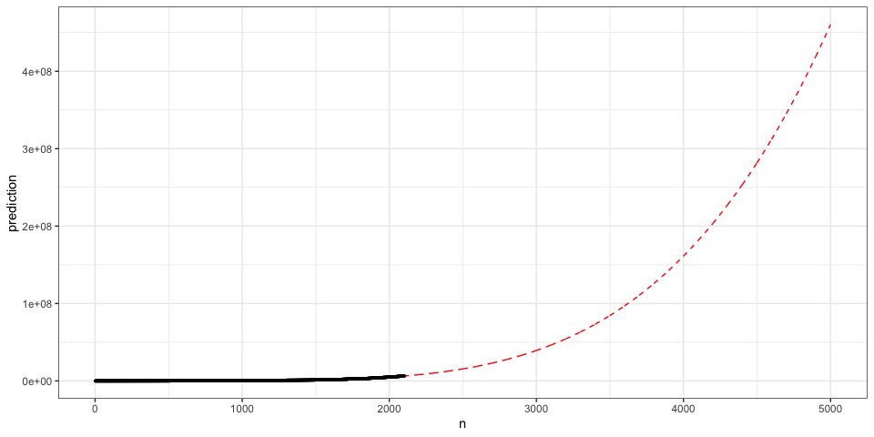
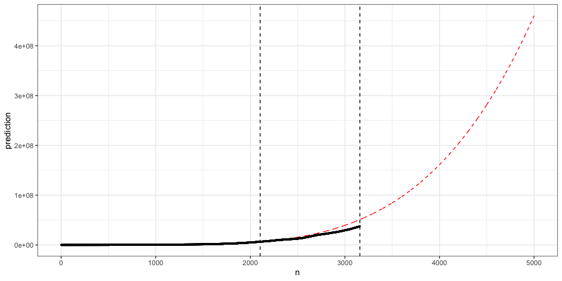

Chapter 5 How Many Repositories Are There on GitHub?

5.1 Have You Ever Wondered…
We come across statistical questions all the time, even if we don’t immediately realize it. From “whoah, how did Amazon know I was looking for a collection of rubber ducks that look like cowboys?” to more applied questions like “When will this server run out of storage space?” or “When will this project be completed?” Fortunatley, we live in a data-driven society; with access to billions of data sources from all over the world, we should be able to answer anything, right? Data comes in all kinds of forms; heartrate data every second from your fitness watch, location check-ins from that pizza place you went to last week, transactions, clicks, views, posts, tags… It’s all digital data that can tell us something about the world. But making sense of it all requires statistical thinking and data-wrangling skills.
5.2 How many repositories are there on GitHub?
Consider this question. The immediate response is to go Google it; voila! You have an answer (it seems to say that there are 100 million repositiories). But how would you actually arrive at that answer? And how would you know you were correct? Similarly to a straightforward programming task, seemingly simple questions can devolve into tons of unforseen caveats, constraints, and workarounds.
5.2.1 Our Data (GHTorrent)
An important thing to understand early on in your programming career is about APIs and access to data. A lot of the time, you’ll get data via a .csv or .txt file and can run everything on your local machine. But when working with really large datasets, there’s just no way you can run it all on your own laptop. If you wanted to use a program to count the number of repositories on GitHub, you might consider downloading all of them and keeping a counter of each new one. Well, that’s terrabytes of data, so it’s a no-go. So for our question, we are using something called GHTorrent (Gousios, 2013). GitHub itself keeps track of all the behavior happening across the site. Commits, pushes, pull requests, new repositories, issues; and you can access those things through the GitHub API when you have a query. GHTorrent holds on to all that data, through the years. So now we can get a good picture of how fast GitHub is growing over time. Below, we query the ghtorrent project on Google Big Query, where id is a project id or repository with a created_at value. Grouping by day, we see the number of projects created each day. We also have access to other information about those repositories, like commits, users, language, description and more. For now, let’s look at the simplest count.
5.2.2 DataFiles for this Lesson
For this lesson, we actually stored all of the queries in datafiles in this repository. Accessing the data required a credit card, which is unreasonable to expect from anyone just trying to use these lessons to learn. If you do want to perform different queries of your own, there are several ways to do that. I have included how you could do it using BigQuery and bigrquery (that’s the R package, see the r in there?). Any time you see query_exec() it will be commented out and you will use the data we have provided from the result of that query as of September 2019. That way, you can see how the query would be executed but also you don’t need to fiddle with APIs to follow along in this lesson.
library(bigrquery)
library(ggplot2)
#- set_service_token("servicetoken.json") # you will need to get your own service token from your account. Don't share this!
#- project <- "gitstats" #your project name here
#- # an sql query string
#- sql <- "select count(id) as num_projects,date(created_at) as day
#- FROM [ghtorrent-bq.ght.projects]
#- group by day"
#- # executing the query if you aren't using data provided
#- data <- query_exec(sql, project = project, useLegacySql = FALSE)
# reading in data for the above query that we stored earlier
data <- read.csv("data/how_many_repos/data1.csv")
data <- data[data$day!="2016-05-01",] #crazy outlier? #like unreasonably so
# number of projects created each day (it's going up, but its not the running sum! don't mix them up)
plt = ggplot(data,aes(day,num_projects))+
geom_point()+
theme_bw()+
theme(axis.text.x=element_blank(),axis.ticks.x=element_blank())+
theme(panel.grid.major = element_blank(), panel.grid.minor = element_blank())
plt
data <-data[order(data$day),]
data$n <-seq.int(nrow(data)) #adding in indexing for the days, so they're numeric as opposed to dates
#what we care about is the number of projects total, over time
data$num_projects_sum <- cumsum(data$num_projects)
TOTAL <- sum(data$num_projects) #here's our first answer5.2.3 Different Strokes for Different Folks
Could it be that depending on what we investigate and take into account, our final result changes? Does a repository count if it’s not code? What if it hasn’t been committed to in over a year? Do we care about forked repositories? It depends on what we care about… Do we care about active code on GitHub? or do we care about the sheer amount of storage space being taken up on the site? If the latter is the case, do we need information about the size of the repository; maybe even the lines of code? If we care about the former, do we need to look at which files are getting committed to, and which ones aren’t being touched? Let’s keep track of some of our findings in a table.
library(knitr)
library(kableExtra)
library(dplyr)
Final_Result <- c(TOTAL)
Description <- c("simplest raw sum")
different_results <- data.frame(Final_Result,Description)
kable(different_results,caption="different results obtained from different setups of the problem") %>%
kable_styling(bootstrap_options = "striped", full_width = T)| Final_Result | Description |
|---|---|
| 37473073 | simplest raw sum |
5.2.4 Training Data and Testing Data
You may have a heard about models being “trained”. Sometimes this conjures up images of a baby robot learning its ABCs. But training a model basically means building an equation or program off of some data, so that it can reliably generalize to new data. We try to find an equation that “fits” the data while also being flexible enough to generalize into the future. If you’ve heard of the term “trend line” or “line of best fit”, this is the concept we will start with when discussing training and test data. On our training data, we find a good fitting trend line. In order to evaluate how good that trend line is, we can compare how it performs on our test data. The benefit of reserving test data is that we can immediately evaluate our model, instead of simply waiting for it to be deployed in the world and either failing or succeeding (trust me, that’s not a good idea). So we hold on to some data where we know the true values, and compare to what our trained model would predict. Below, we split our data into a training and test set, with a 70/30 split. With some data, you would sample in order to get a wide range of test data from across the entire set. However, because our model is over time we will reserve the last 30% of true data in order to evaluate how effective our models are. You do not always want to just grab the last bit of data, as this can be biased for some problems where time is not the independent variable. (Imagine you were trying to fit a model to determine the genre of a movie, and your test set was accidentally all holiday movies because you pulled from December for your test set). In our case, we will grab the most recent 30%.
third <- length(data$n)%/%3
test <- tail(data,third)
train <- head(data,third*2)
ggplot(train,aes(n,num_projects_sum))+
geom_point(size=.2,alpha=.2)+
ggtitle("Training Data")+
theme_bw()
ggplot(test,aes(n,num_projects_sum))+
geom_point(size=.2,alpha=.2)+
ggtitle("Testing Data")+
theme_bw()
5.3 Overfitting and Underfitting
I guarantee it, you can probably fit a model to anything. It doesn’t mean it’s a good model, and it’s most certainly not guaranteed to be a useful one. The reason why we have training and testing data is so that we can evaluate how useful our model is at predicting new information. A big danger of fitting a model to your training data is overfitting. All data is messy, and contains noise. That means, tiny dips and jumps that are just natural in the data. But we want to capture the main trends, the main patterns, in the data we have. So we want to make sure that we aren’t creating models to fit those tiny dips that don’t really matter. Let’s zoom in on our data, and look at a very close fit vs. a not so great fit:
zoom <-1500
#zoom in on a window of our data
small <- train[train$n>zoom,]
underfit <- lm(num_projects_sum~poly(n,1,raw=TRUE),data=small) #just one parameter, it will be a straight line
overfit <- lm(num_projects_sum~poly(n,10,raw=TRUE),data=small) #10 parameters, this will be a very funky polynomial
just_right <- lm(num_projects_sum~poly(n,3,raw=TRUE),data=small) # 3 parameters, this one seems to capture enough of the trend, but without overfitting
#generate predictions from the models
pred.underfit<- predict(underfit,data.frame(n=small$n))
pred.just_right<- predict(just_right,data.frame(n=small$n))
pred.overfit<- predict(overfit,data.frame(n=small$n))
#plot the prediction lines
ggplot(train[train$n>zoom,],aes(n,num_projects_sum))+
geom_point(size=.2,alpha=.5)+
geom_line(aes(n,pred.just_right,color="Just Right"))+
geom_line(aes(n,pred.overfit,color="Overfit"))+
geom_line(aes(n,pred.underfit,color="Underfit"))+
scale_color_discrete(name="Models")+
ggtitle("Overfit and Underfit")+
theme_bw()
#zooming in even closer
ggplot(train[train$n>zoom,],aes(n,num_projects_sum))+
geom_point(size=.2,alpha=.5)+
geom_line(aes(n,pred.just_right,color="Just Right"))+
geom_line(aes(n,pred.overfit,color="Overfit"))+
geom_line(aes(n,pred.underfit,color="Underfit"))+
scale_color_discrete(name="Models")+
ggtitle("Overfit and Underfit")+
theme_bw()+
xlim(zoom+300,zoom+500)+
ylim(train$num_projects_sum[zoom+300],train$num_projects_sum[zoom+500])
The model with more parameters sure does seem to fit the data best! You can imagine going to GitHub and announcing “I’ve found the exact predictive model of how fast you are growing!” Your fit is so great, that it captures the small little nuances of how the growth fluctuates. You must be so proud.
Unfortunately, let’s look at the extrapolated trajectory of the models we have. Extrapolating into the future, we see that the best fitting model actually starts going in a crazy direction. It wasn’t capturing the main trend, and is then subject to totally bombing on new data. Overfitting: using too complex a model, with too many unjustified parameters, to accidentally fit to the noise in your data instead of capturing the main trend. Underfitting: not complex enough of a model, missing out on valuable information about the patterns in the data (like a straight line attempting to fit an exponential). We want the “sweet spot” where we have a reasonable number of parameters, but are also robust to real world data, and can handle noisy inputs.
#extrapolate the model onto future data
extrap<- as.data.frame(predict(overfit,data.frame(n=seq(tail(train$n, 1),4000,1))))
extrap$n <- seq(tail(train$n, 1),4000,1)
colnames(extrap) <- c("overfit","n")
extrap$underfit <-predict(underfit,data.frame(n=seq(tail(train$n, 1),4000,1)))
extrap$justright <-predict(just_right,data.frame(n=seq(tail(train$n, 1),4000,1)))
merged <- merge(extrap,train,all=TRUE)
#plot those lines and see how well they will do on future data
plt = ggplot(merged,aes(n,num_projects_sum))+
geom_point(size=.5,aes(color="True Data"),color="black")+
geom_line(aes(n,justright,color="Just Right"))+
geom_line(aes(n,overfit,color="Overfit"))+
geom_line(aes(n,underfit,color="Underfit"))+
theme_bw()+
geom_vline(xintercept = 3100,linetype="dashed")+
xlim(zoom,NA)+
ylim(-1000,NA)+
xlab("Time (days)")+
ylab("Total Repositories")+
scale_color_discrete(name = "Models")+
ylim(NA,1.0e+8)
plt
Here we have the story of the Three Bears, Machine Learning style. The first equation sort of gets the trend (at least it’s increasing?!) but really isn’t capturing the nonlinearity of the data. A line can only do so much. That’s an example of underfitting. Then, we have a 10-term polynomial that beautifully fits the data we have; too perfectly. Are 10 terms really necessary to capture the basic trend? And beyond just being excessive, the complex model may fail miserably on future data.
5.4 Slow Down! How can we fit a curve to this?
We are trying to understand the true trend in the world (in our case, the number of repositories on GitHub and how that is changing over time). Simply understanding trends is nice, as we might be able to infer some causal factors that help a company grow, or we may be able to show that some phenomenon is, in fact, changing over the course of several years. But the real value comes in being able to reliably predict how that trend will continue in the future. The world is filled with patterns and statistical questions, from asking how many repositories there are on GitHub to predicting who needs financial aid or how many people will go vote each year.
Sometimes, we can simply look at the data and describe the trend line; “it’s linear and decreasing”, “there’s very little or no correlation here”, “that’s exponential”. But things get complicated when we care about the details (which we do!), or if we are dealing in more dimensions than we can see (whoah! don’t worry we will get to that in another lesson). For now, let’s talk about some of the details we might care about in our problem, that we need modeling to help us determine:
- can a model even capture the regularities in the data we have?
- how consistently is the number of repos growing over time?
- is it linear growth? exponential? could the growth go back down like a sine wave? maybe it will plateau?
- if we count all the different forks, is the growth different? what if we don’t consider them at all?
- the exact slope of the growth, helping us predict what will happen next year
If we can fit a model, it means that we have an equation that helps us understand the true phenomenon happening in our data. It will never be perfect (you might have heard the term “noise” and that’s basically describing the beautiful unpredictableness of life). But what we hope to achieve is an equation that gets us close enough to what is happening so that it is useful. So for our data, what we hope to have by the end of this is an equation that helps us map a line through the growth of repositories on GitHub. For any year, we can look up in our equation how close we got to the actual number.
So where do we start? I find it really helpful to imagine the worst model you could possibly think of, and start there. Think of this like a creative exercise; what would be the worst way to solve this problem? Some great terrible ideas might include:
- Always predict “7” as the answer
- Always predict the mean across all years
- Guess randomly, using different equations, until one sticks
Luckily, the field of statistics and data science has come a tad further than these methodologies. So here are some guiding questions to help us determine which model to start with.
- What is a reasonable guess at the shape for this growth? Keep in mind that simpler is often better.
- What do we know about the world that makes that shape reasonable? For instance, we often see that exponential growth tends to taper off eventually, like in the case of X (example here). We also know that there really is only so much storage space, and other constraints that affect that happens in the world. As always, we don’t just have a bunch of numbers we are looking at about GitHub repos; but a result of complex interworking parts from behavior in the real world.
5.5 What kind of curve should we fit?
linear_fit <- lm(num_projects_sum~n,data=train)
second_polynomial <- lm(num_projects_sum~poly(n,2,raw=TRUE),data=train)
third_polynomial <- lm(num_projects_sum~poly(n,4,raw=TRUE),data=train)
# testing out different shapes, from linear to third-order polynomial
train$linear <- predict(linear_fit,data.frame(n=train$n))
train$second_polynomial <- predict(second_polynomial, data.frame(n=train$n))
train$third_polynomial <- predict(third_polynomial, data.frame(n=train$n))
#ggplot those curves
plt <- ggplot(train,aes(n,num_projects_sum))+
geom_point(size=.5)+
ggtitle("Github repos over time")+
geom_line(aes(n,linear, color="Linear"),size=.5,alpha=.6)+
geom_line(aes(n,second_polynomial,color="Second Polynomial"),size=.5,alpha=.6)+
geom_line(aes(n,third_polynomial,color="Third Polynomial"),size=.5)+
geom_vline(xintercept = seq(0,3300,by=365),linetype="dashed",alpha=.2)+
theme_bw()+
theme(axis.text.x=element_blank(),axis.ticks.x=element_blank())+
theme(panel.grid.major = element_blank(), panel.grid.minor = element_blank())+
xlab("Time")+
ylab("Total Repositories")+
scale_y_continuous(labels = function(x) format(x, scientific = FALSE))+
scale_color_discrete(name="Models")
plt
future <- as.data.frame(predict(third_polynomial, data.frame(n=seq(0,5000))))
future$n <- seq(0,5000)
colnames(future) <- c("prediction","n")
future <- merge(train,future,all=TRUE)
ggplot(future,aes(n,prediction))+
geom_line(color="red",linetype="dashed")+
geom_point(aes(n,num_projects_sum),color="black",size=.5)+
theme_bw()
future_and_test <- merge(test,future,all=TRUE)
#predictions for testing period
library(data.table)
future_and_test<-setDT(future_and_test)[, lapply(.SD, na.omit), by = n]
ggplot(future_and_test,aes(n,prediction))+
geom_line(color="red",linetype="dashed")+
geom_point(aes(n,num_projects_sum),color="black",size=.5)+
geom_vline(xintercept=tail(train$n,1),linetype="dashed")+
geom_vline(xintercept=tail(test$n,1),linetype="dashed")+
theme_bw()
5.6 Evaluation
Because we held on to some test data, we can evaluate how good our model is on actual prediction, as opposed to just looking at how well it fits the [training data](glossary.html#trainingdata] (that matters too, but not nearly as much). What we have now is two vectors that we can compare. The true data (our test data), and the predicted data (our model). We can compare how good our model did by recording the root mean squared error. One of the great things about R is that we can do this very straightforwardly:
predictions <- future_and_test %>%
filter(n %in% (test$n))
predictions <-predictions[order(predictions$n),]
test <-test[order(test$n),]
head(test)## num_projects day n num_projects_sum
## 1749 12595 2013-10-19 2107 6459831
## 501 12179 2013-10-20 2108 6472010
## 2455 18097 2013-10-21 2109 6490107
## 925 18414 2013-10-22 2110 6508521
## 500 18160 2013-10-23 2111 6526681
## 510 18949 2013-10-24 2112 6545630residuals <- test$num_projects_sum-predictions$prediction
head(residuals)## [1] 11933.068 8412.371 10777.812 13428.346 15792.929 18914.514RMSE = function(predictions, true_values){
sqrt(mean((predictions - true_values)^2))
}
RMSE(predictions$prediction,test$num_projects_sum)## [1] 6035449